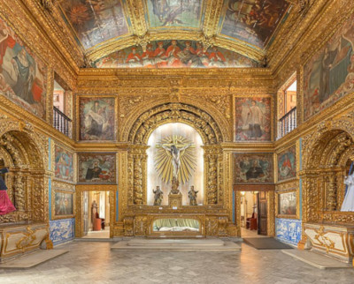

Ponto Turístico: "CAPELA DOURADA"
História
A pedra inaugural da construção da capela foi lançada em 1696, mas ela foi considerada inteiramente concluída somente em 1724, vinte e oito anos após o lançamento da pedra inaugural. Para a construção de uma capela com toda essa riqueza de detalhes, até que não é muito tempo! O tombamento como Monumento Nacional aconteceu em 1938 e segundo os dados do IPHAN, é um dos processos de tombamento mais antigos do Estado de Pernambuco, para ser mais precisa, é o processo de tombamento nº 6 da relação de bens tombados em Pernambuco. Desde então, a Capela Dourada é considerada um Monumento Nacional. Ela é toda entalhada em madeira de cedro, em estilo barroco, recoberta em gesso e lâminas de ouro. A capela-mor foi entalhada em 1698 por Antônio Martins Santiago e dourada por Manuel de Jesus Pinto em 1799, tem no seu nicho central um grande crucifixo ladeado pelas imagens de São Cosme e Damião.
Dados importantes
- ENDEREÇO: Rua do Imperador Pedro II, S/N , bairro Santo Antônio. Fica pertinho da Praça da República. A entrada é pelo Museu.
- HORÁRIO: O Museu de Arte Sacra (e a visitação à capela) está aberto de segunda à sexta, das 08:00 às 11:30 e das 14:00 às 17:00. Aos sábados, das 08:00 às 11:30. A duração da visita guiada é de aproximadamente 40 minutos, então chegue num horário compatível com o tempo de visitação.